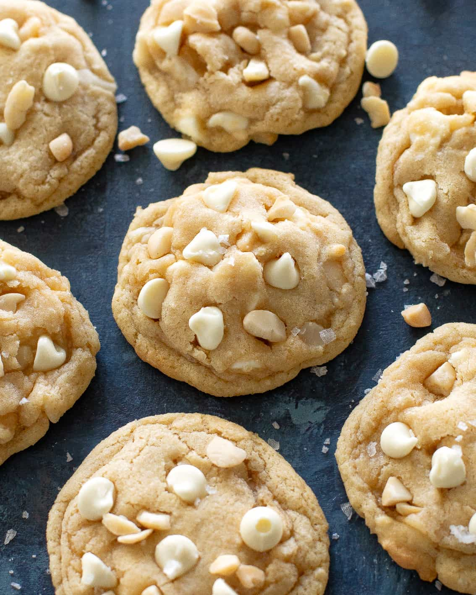

White Chocolate Macadamia Nut Cookies

Ingredients
- 1 cup unsalted butter, softened
- 3/4 cup granulated sugar
- 3/4 cup packed brown sugar
- 2 large eggs
- 1 teaspoon vanilla extract
- 2 1/4 cups all-purpose flour
- 1 teaspoon baking soda
- 1/2 teaspoon salt
- 1 cup white chocolate chips
- 1 cup chopped macadamia nuts
Instructions
- Preheat oven to 350°F (175°C). Line baking sheets with parchment paper.
- In a large mixing bowl, cream together softened butter, granulated sugar, and brown sugar until light and fluffy.
- Beat in eggs and vanilla extract until well combined.
- In a separate bowl, sift together flour, baking soda, and salt. Gradually add dry ingredients to the creamed mixture and mix until dough forms.
- Stir in white chocolate chips and chopped macadamia nuts until evenly distributed.
- Drop dough by rounded tablespoons onto prepared baking sheets.
- Bake for 10 to 12 minutes, or until cookies are lightly golden.
- Remove from oven and let cool on baking sheets for 5 minutes, then transfer to wire racks to cool completely.
- Enjoy your delicious homemade white chocolate macadamia nut cookies!